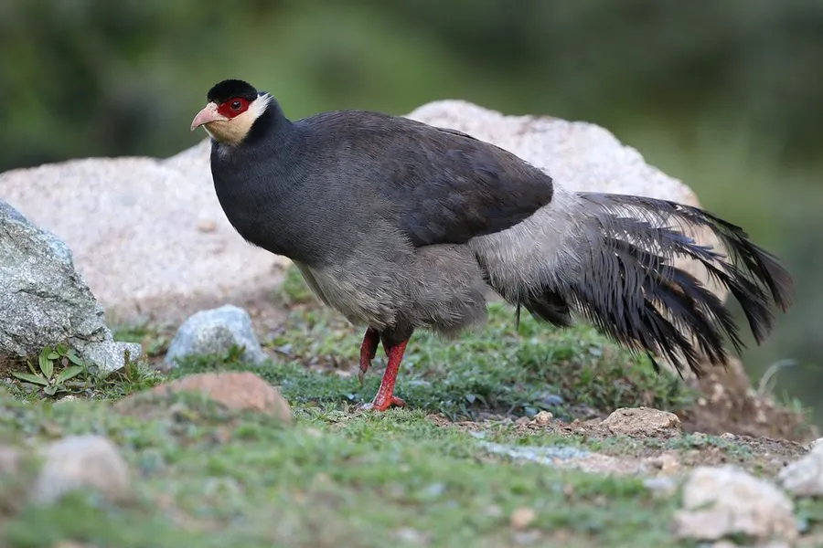

鸟类 · 动物界
藏马鸡 Crossoptilon harmani

青藏高原南部的马鸡，体羽蓝灰，耳簇雪白，脸部裸皮鲜红，结群在高原灌丛与草甸间觅食，是中国的特有雉类。
- 分类
- 门脊索动物门纲鸟纲目鸡形目科雉科属马鸡属
- 栖息环境
- 青藏高原南部海拔 3000–5000 m 的高山灌丛、草甸与林缘
- 地理分布
- 中国西藏南部雅鲁藏布江流域及邻近的高山地区
- 保护级别
- IUCN 近危（NT）；中国国家二级保护动物
物种志
藏马鸡体长 70–85 cm，体重约 1.5–2 kg，雌雄羽色相近。通体蓝灰色，羽枝松散，头侧有一对雪白的耳羽簇，脸部和眼周裸皮鲜红，尾羽深蓝灰色、羽端带金属光泽，尾形略似马尾，这也是“马鸡”一名的由来。
它们生活在青藏高原南部，分布在中国西藏雅鲁藏布江流域及邻近的高山地区，栖息于海拔 3000–5000 m 的高山灌丛、草甸与林缘。藏马鸡常成 10–30 只的群体活动，清晨和傍晚在林缘与灌丛间觅食，食物包括植物根茎、嫩叶、种子和昆虫。繁殖期在 5–6 月，营巢于灌丛或岩石旁，每窝产卵 4–8 枚。由于分布区狭窄、放牧与人类活动干扰，其种群数量有限，被列为近危物种。
形态与习性
- 食性植物根茎、嫩叶、种子和昆虫
- 体长70–85 cm
- 体重约 1.5–2 kg
- 海拔3000–5000 m 的高山灌丛与草甸
- 繁殖5–6 月产卵，每窝 4–8 枚
- 保护中国国家二级保护动物
趣味知识
- 藏马鸡曾长期被视为白马鸡的一个亚种，后来才被确认为独立物种。
- 它尾羽的形状和下垂的姿态像马尾，马鸡之名由此而来。
- 冬季高山食物匮乏时，它们会下移到较低的山谷和农田边缘觅食。